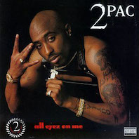

All Eyez on Me Review- Pac's Ambitions Created a Classic

2pac's All Eyez on Me is one of the best and most influential hip-hop albums of all time. In 1996, when this album was released the hype for this album was at an all time high. He had just released one of his best albums in jail and 2 singles after coming out of jail. 2pac delivered on the hype by releasing the first double LP rap album and making every song a banger.
The production in All Eyez on Me is easily some of the best in rap history every song has a top notch beat the Pac raps to. Thanks to Dat Nigga Daz who produced some of the most hardcore beats in the LP and Johnny J producing the more smooth beats, and even Dr Dre who produced a couple song, this album has aged timelessly. The flow the 2pac has on these beats is nothing more than perfection and the chemistry he has with other artists throughout is on another level. The most standout features on the track-list are Snoop Dogg, Nate Dogg, the Outlawz, Redman, Kurupt, Method Man and E-40. The names I listed aren't more than half the people who featured in this LP. Although I have praised almost everything about this album I have to be honest there are a couple of skips that aren't objectively bad songs. This is minor though because it has a total of 27 songs spanning over 2 hours. I don't think there are many other albums that run for this long and have no major flops.
Pac is still at the top of his lyrical and story-telling game in All Eyez on Me. I Ain't Mad At Cha tells the best story in the entire LP and it focuses on 2pac reminiscing on a friend who has grown out of the ghetto and wants to change, as well as talking about how Pac and the hood have grown to be famous together. The lyrics throughout the album maintain Pac's fantastic word-plays and rhyme schemes while being emotive, evocative, aggressive and even playful at times. Pac's delivery throughout the album also consists of the four main elements I just listed. His best delivery is in the first song Ambitionz az a Ridah which are show pure raw aggression against one of the most well produced beats ever made. The versatility on this album ranges from disses at other rappers, to partying, Pac's desires, stories from his past, gangsta rhymes, stories from the hood and ghetto, as well as love or sex. In every way this album is a showcase of 2pac's abilities as a rapper and the showcase is one of the best ever.
All Eyez on Me is the definition of a classic masterpiece of the rap and hip-hop genres. It was the first double LP's in the genre, nearly every song is a banger, it has timeless production, fantastic lyrics, great storytelling, delivery that can evoke emotion in anyone and the versatility to rap about nearly any topic. Before this album 2pac was looked upon as a rap superstar to a timeless rap legend. All Eyez on Me is a masterpiece.